Paris
Guide complet pour découvrir les quartiers, les expériences incontournables, les meilleures adresses et préparer votre séjour à Paris.
Guide • Quartiers • Activités • Restaurants • Carte interactive
Le métro reste le moyen le plus rapide pour explorer Paris facilement.
Tour Eiffel, Louvre, Arc de Triomphe et Montmartre.
Découvre les meilleures adresses parisiennes et rooftops premium.
PSG, Roland-Garros et grands événements parisiens toute l’année.
Paris est l'une des villes les plus visitées au monde. Entre monuments emblématiques, musées prestigieux, cafés historiques et quartiers de caractère, la capitale française offre une richesse culturelle exceptionnelle.
Du Marais à Montmartre, de Saint-Germain-des-Prés aux quais de Seine, chaque quartier possède sa propre atmosphère et révèle une facette différente de Paris.
Entre gastronomie, histoire, art de vivre et événements internationaux, Paris reste une destination incontournable pour une première découverte comme pour un séjour plus approfondi.
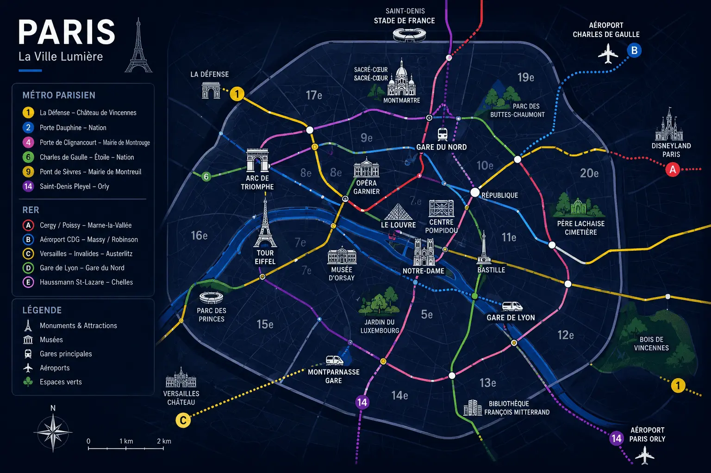
Au-delà de la Tour Eiffel et des monuments emblématiques, certaines expériences permettent de découvrir un Paris plus authentique, plus local et souvent plus mémorable.
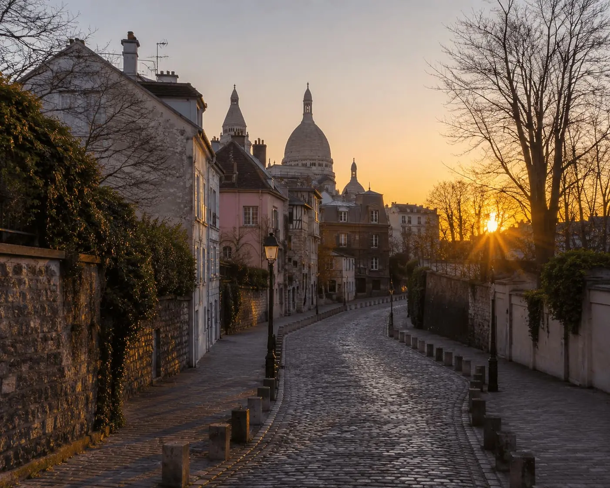
Découvrir Montmartre tôt le matin permet de profiter de ses ruelles, de la place du Tertre et de la basilique du Sacré-Cœur dans une atmosphère beaucoup plus calme qu'en journée.
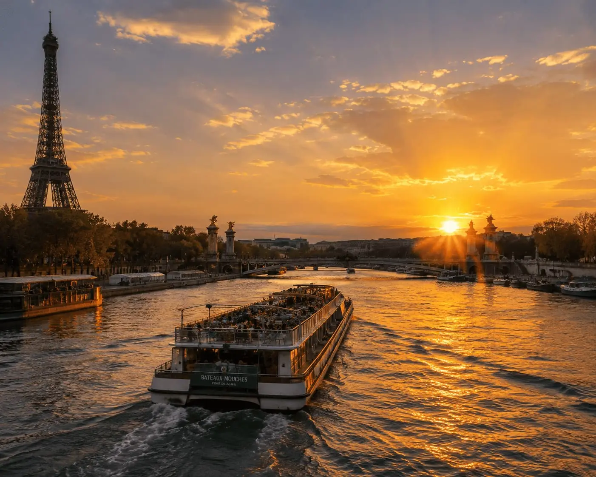
Lorsque les monuments commencent à s'illuminer, une croisière sur la Seine permet d'admirer Paris sous son plus beau visage dans une ambiance musicale typiquement parisienne.
Réserver une croisière sur la Seine →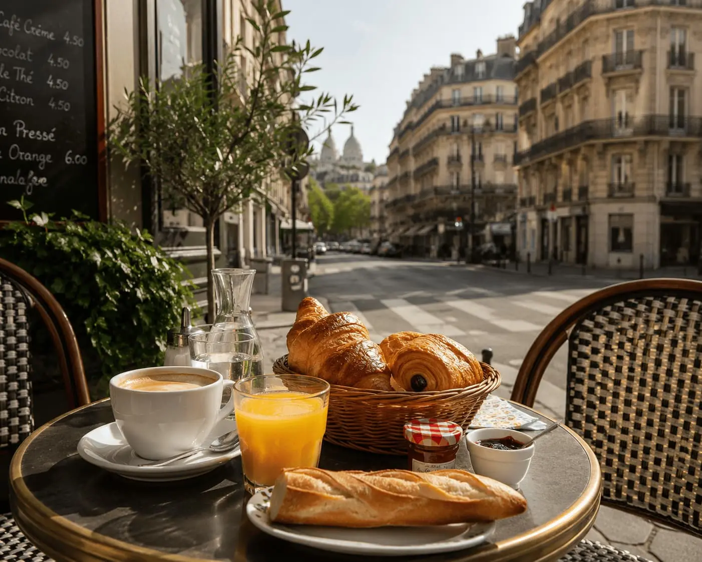
S'installer en terrasse avec un café, un croissant et observer la vie parisienne fait partie des expériences les plus simples mais aussi des plus authentiques à vivre dans la capitale.
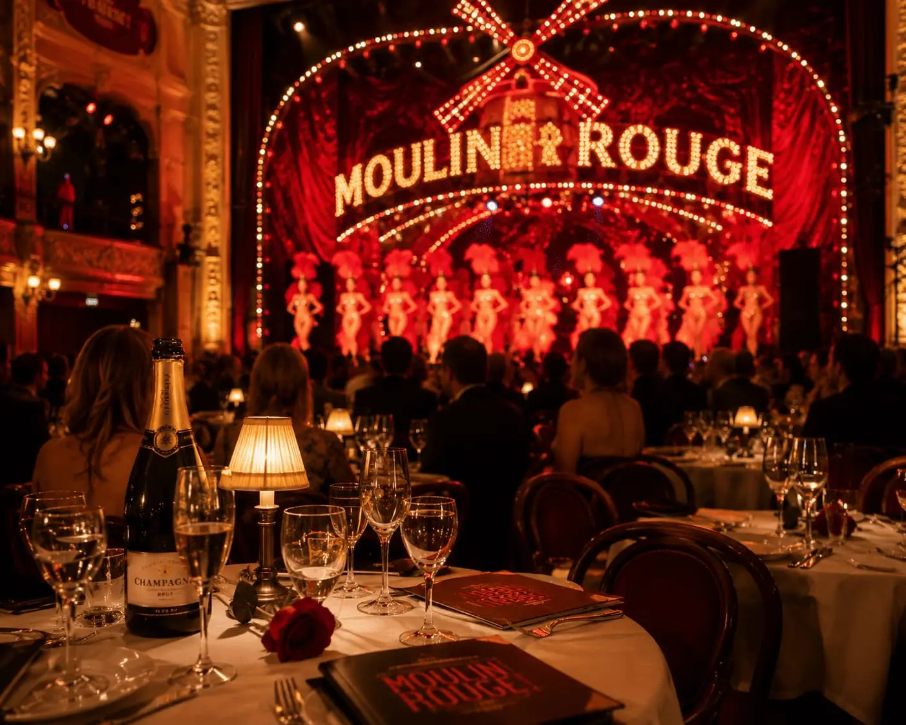
Entre costumes, musique, danse et ambiance emblématique, assister à un spectacle du Moulin Rouge reste l'une des expériences nocturnes les plus célèbres et mémorables de Paris.
Voir le spectacle du Moulin Rouge →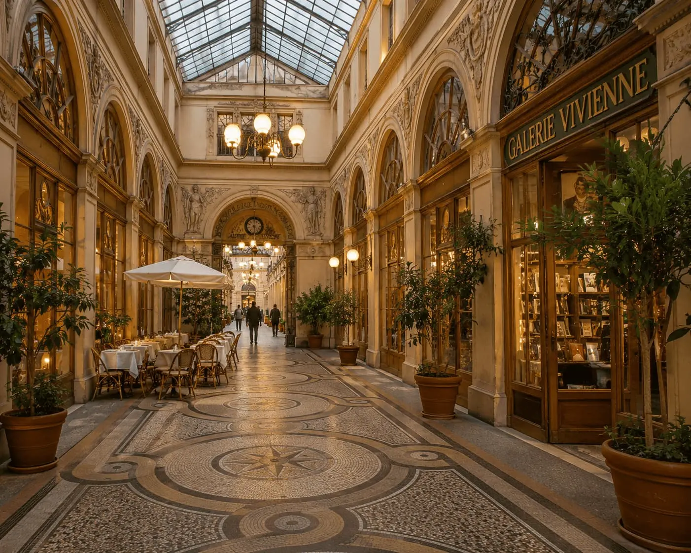
Cette galerie couverte du XIXe siècle fait partie des plus élégantes de Paris avec ses mosaïques, ses boutiques et son atmosphère intemporelle.
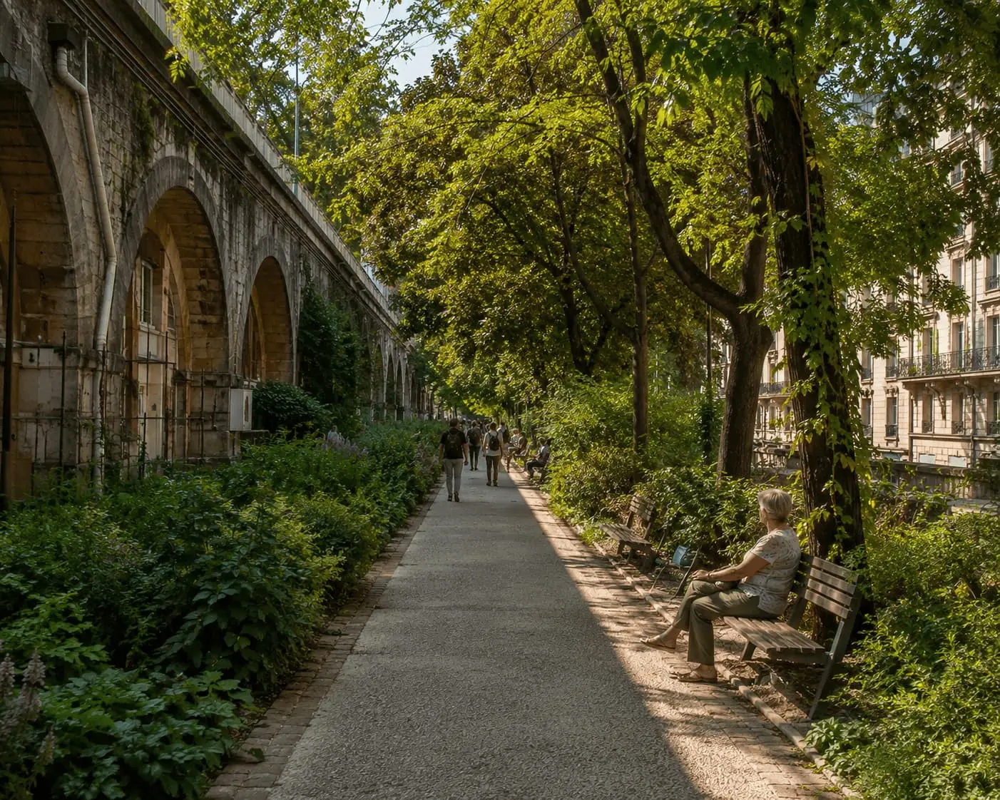
Ancienne voie ferrée transformée en promenade suspendue, la Coulée Verte traverse plusieurs quartiers de Paris et offre une perspective originale loin de l'agitation touristique.
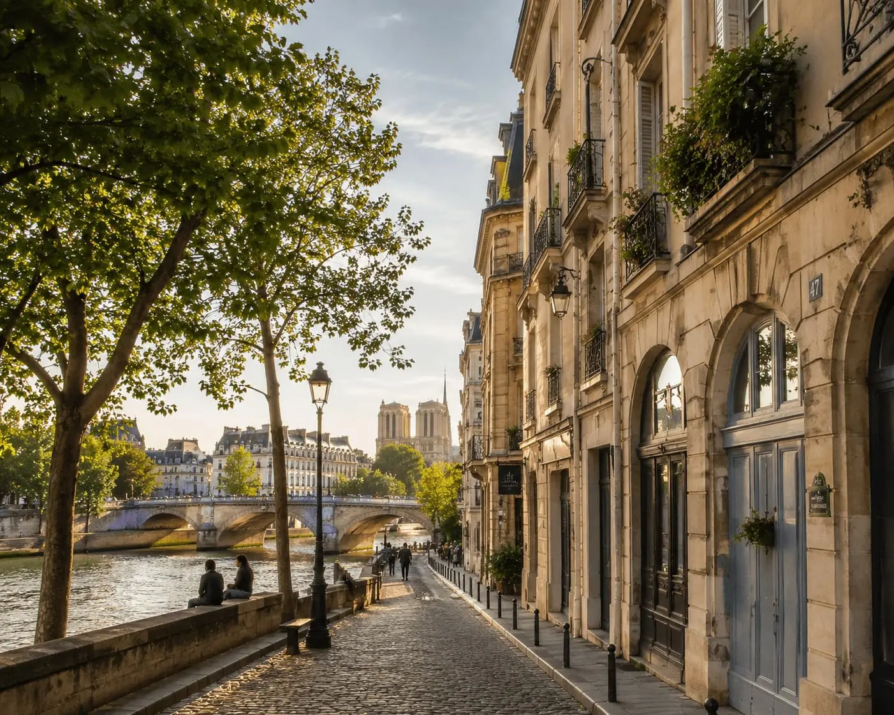
Située au cœur de la Seine, l'Île Saint-Louis dévoile un Paris plus paisible entre hôtels particuliers, petites rues et quais élégants.
Explore Paris rapidement grâce au métro parisien et au RER.
Site officiel RATP →Découvre Paris autrement avec les vélos Vélib’ disponibles partout dans la ville.
Louer un Vélib' →Loue facilement une voiture en libre-service pour explorer Paris autrement.
Réserver une voiture →L'un des meilleurs quartiers pour une première visite. Central, vivant et plein de charme, il permet d'accéder facilement aux principaux sites de Paris.
Le quartier le plus emblématique de Paris. Ruelles pavées, artistes, cafés et ambiance typiquement parisienne au pied du Sacré-Cœur.
Élégant et raffiné, ce quartier historique est réputé pour ses cafés mythiques, ses librairies et son atmosphère parisienne intemporelle.
Idéal pour séjourner près de la Tour Eiffel, des Invalides et des quais de Seine dans un environnement calme et prestigieux.
Parfait pour le shopping, les transports et les spectacles. Un excellent compromis pour découvrir Paris facilement.
Comparez les hébergements dans les principaux quartiers de Paris.
Le français est la langue officielle. Dans les zones touristiques, de nombreux professionnels parlent également anglais.
L'euro (€) est utilisé partout à Paris. Les paiements par carte bancaire sont largement acceptés dans les commerces, restaurants et transports.
La France utilise les prises de type C et E avec une tension de 230 V. Aucun adaptateur n'est nécessaire pour la plupart des voyageurs européens.
Trois à cinq jours permettent de découvrir les principaux quartiers, monuments et musées. Une semaine offre une expérience plus complète.
Le printemps et l'automne offrent généralement les conditions les plus agréables pour visiter Paris avec une fréquentation plus modérée.
Pour un séjour confortable, prévoyez généralement entre 150 € et 300 € par jour selon l'hébergement, les activités et les restaurants choisis.
Des cafés historiques aux quartiers les plus animés en passant par les plus belles vues sur la Tour Eiffel, Paris offre une expérience gastronomique qui fait partie intégrante du voyage.
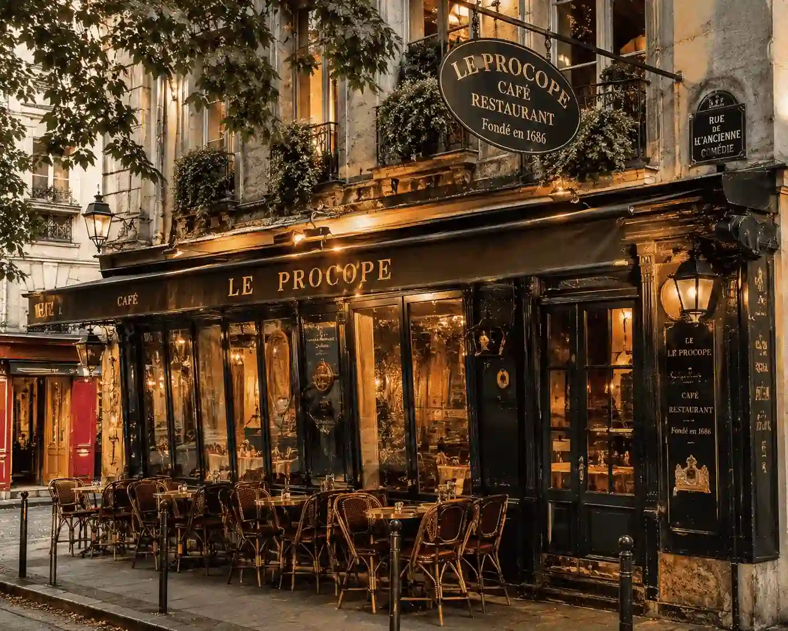
Le Café de Flore, Les Deux Magots ou encore Le Procope font partie de l'histoire de Paris. Ces établissements emblématiques permettent de découvrir l'art de vivre parisien dans un cadre chargé d'histoire.
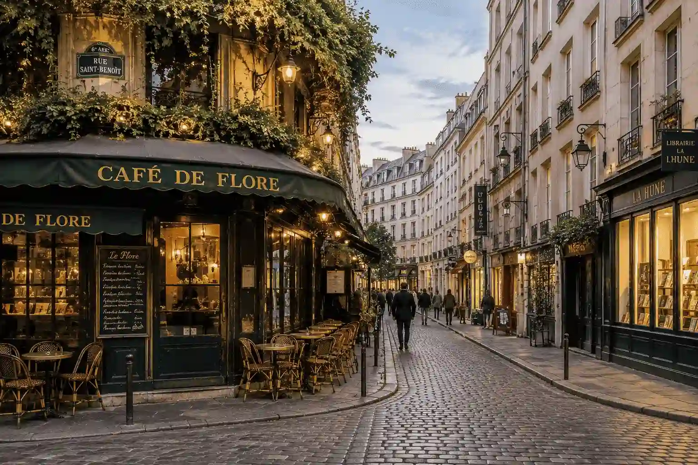
Deux des meilleurs quartiers pour dîner à Paris. Terrasses, bistros, bars à vin et restaurants animés créent une ambiance unique jusque tard dans la soirée.
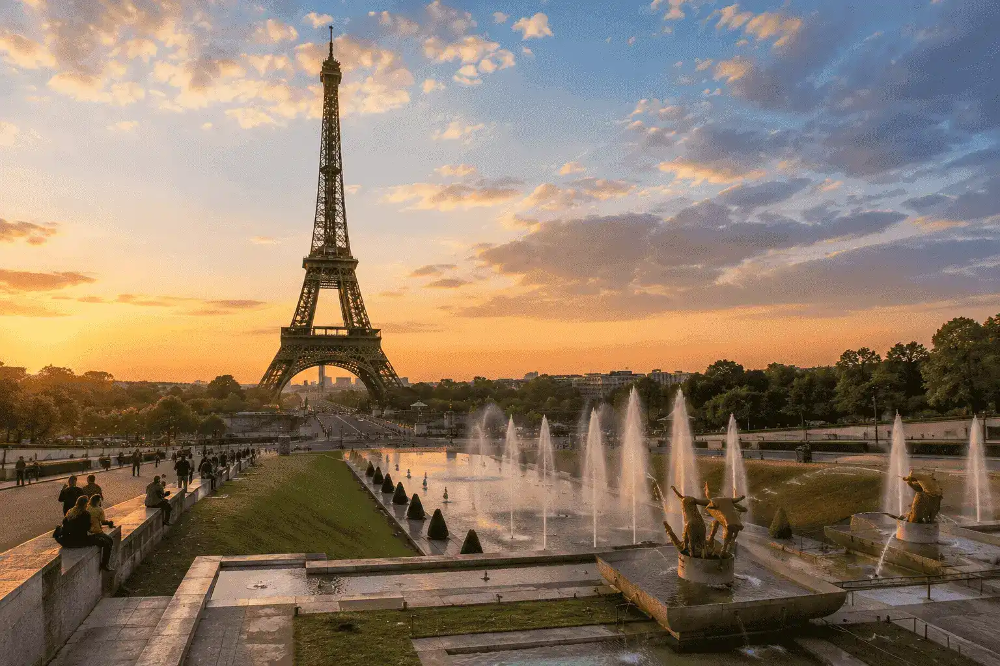
Autour du Trocadéro et des quais de Seine, certains restaurants offrent une vue spectaculaire sur la Tour Eiffel illuminée. Une expérience particulièrement mémorable à la tombée de la nuit.
Des monuments emblématiques aux musées mondialement connus, certaines expériences font partie des incontournables d'un premier voyage à Paris.
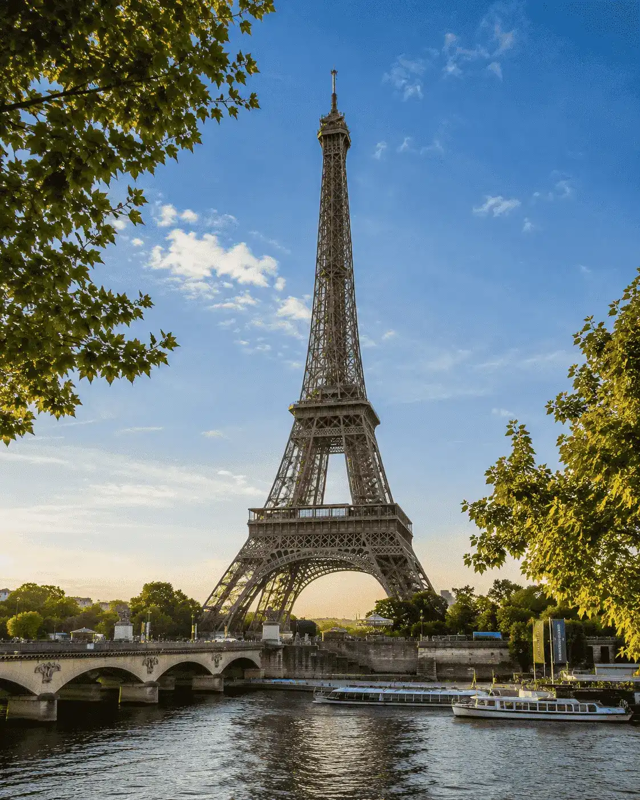
Le symbole de Paris et l'un des monuments les plus célèbres au monde. De jour comme de nuit, la Dame de Fer reste incontournable.
Réserver un billet →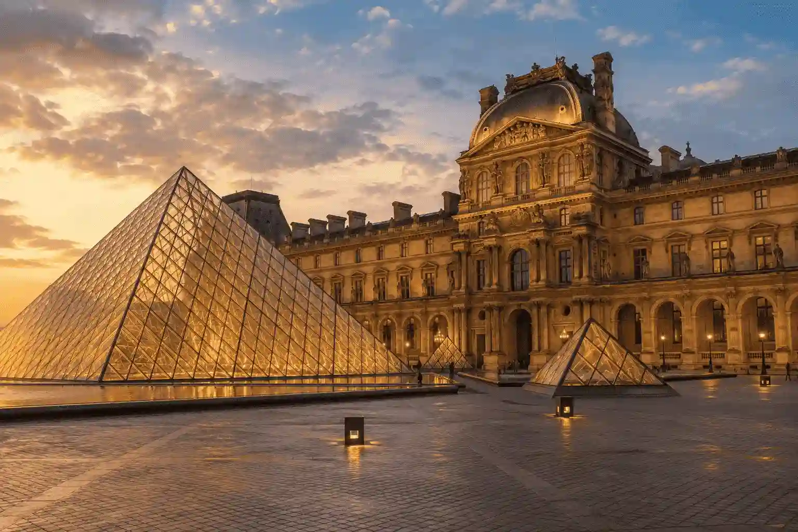
Le plus grand musée d'art du monde abrite des chefs-d'œuvre comme la Joconde et attire des millions de visiteurs chaque année.
Voir les visites du Louvre →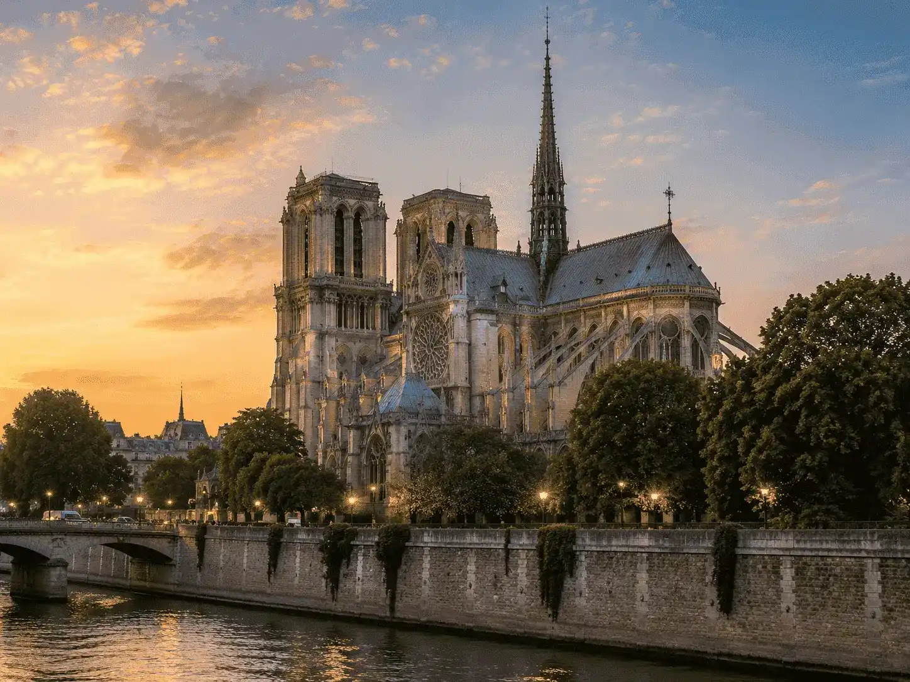
Située au cœur de Paris, la cathédrale Notre-Dame reste l'un des monuments historiques les plus emblématiques de France.
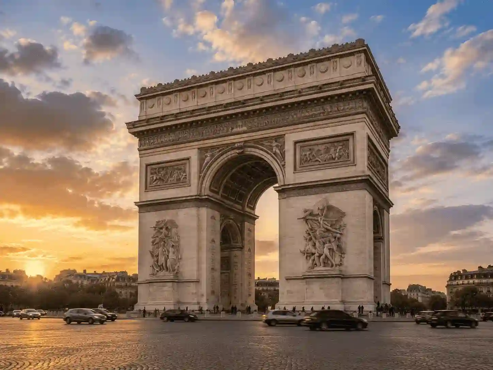
Dominant les Champs-Élysées, l'Arc de Triomphe offre également l'un des plus beaux panoramas sur les grandes avenues parisiennes.
Billets Arc de Triomphe →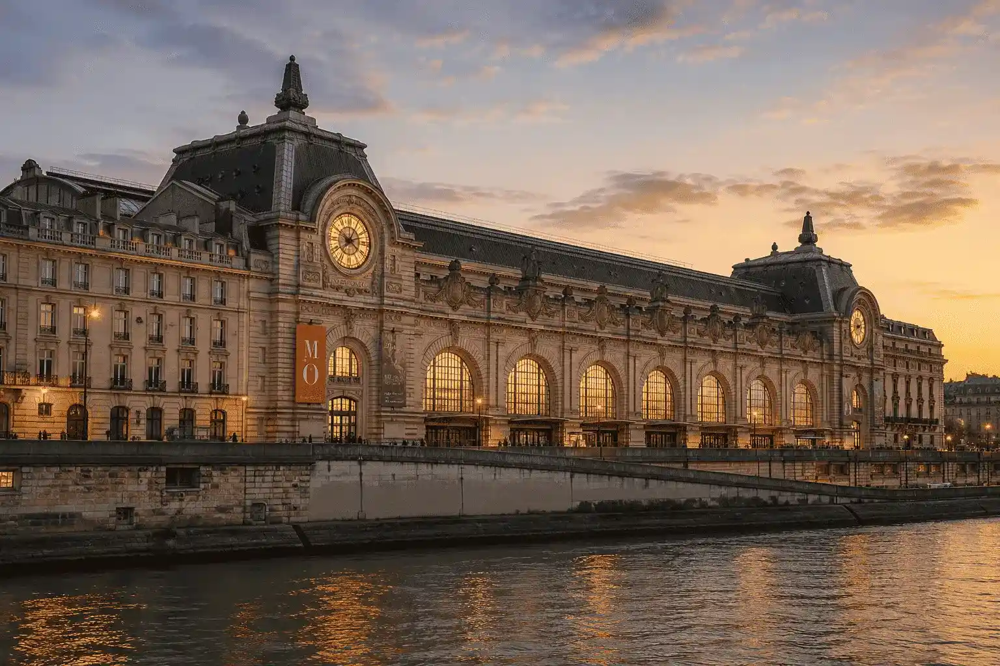
Installé dans une ancienne gare, le musée d'Orsay possède l'une des plus belles collections impressionnistes au monde.
Voir les billets du musée →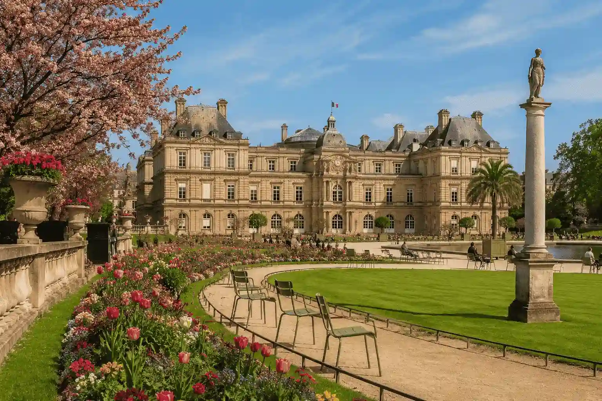
L'un des plus beaux jardins de Paris, idéal pour une pause au cœur de la capitale entre culture et détente.
Au-delà des monuments, Paris accueille toute l'année certains des plus grands événements sportifs, culturels et musicaux d'Europe.
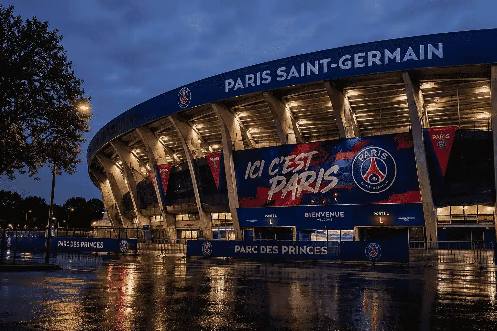
Assister à un match du Paris Saint-Germain permet de découvrir l'ambiance unique du football français dans l'un des stades les plus célèbres d'Europe.
Billetterie officielle PSG →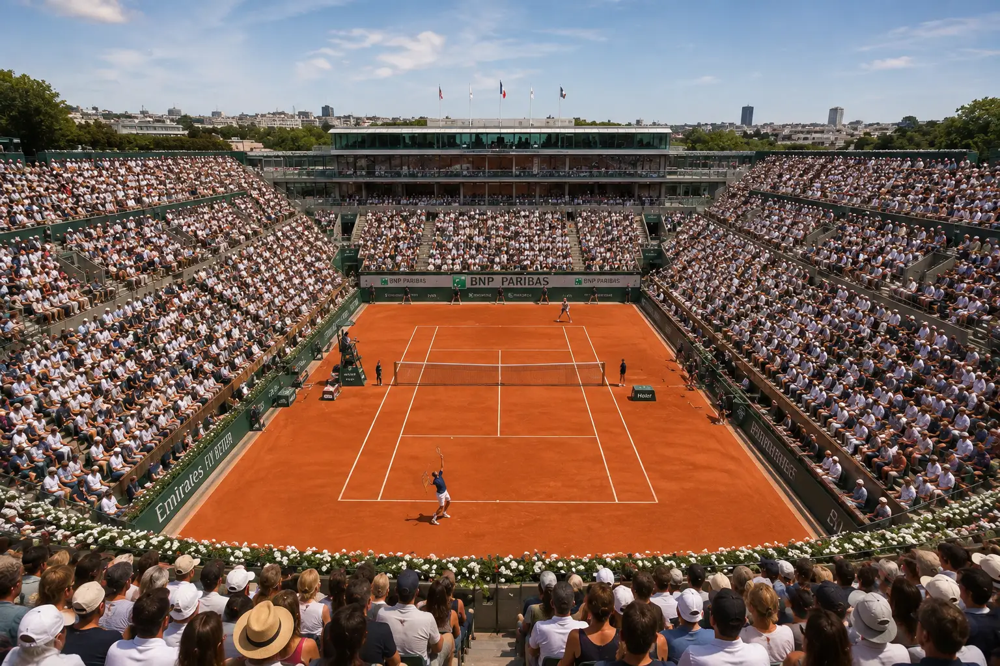
Chaque printemps, les meilleurs joueurs du monde se retrouvent à Paris pour l'un des tournois de tennis les plus prestigieux du Grand Chelem.
Découvrir Roland-Garros →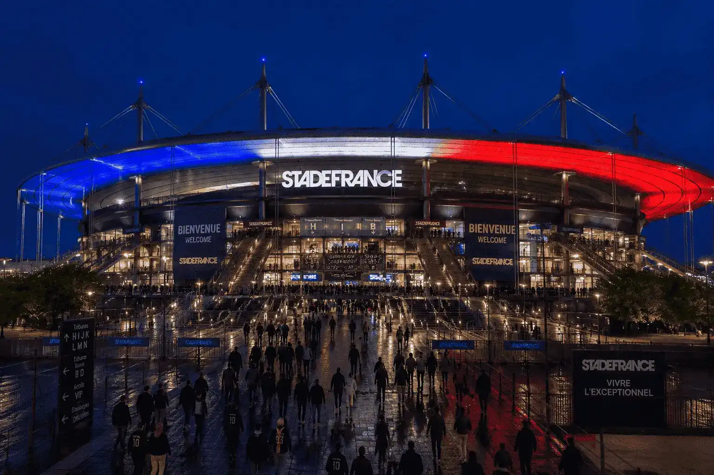
Football, rugby, concerts internationaux et grands spectacles : le Stade de France accueille certains des plus grands événements du pays.
Voir les événements →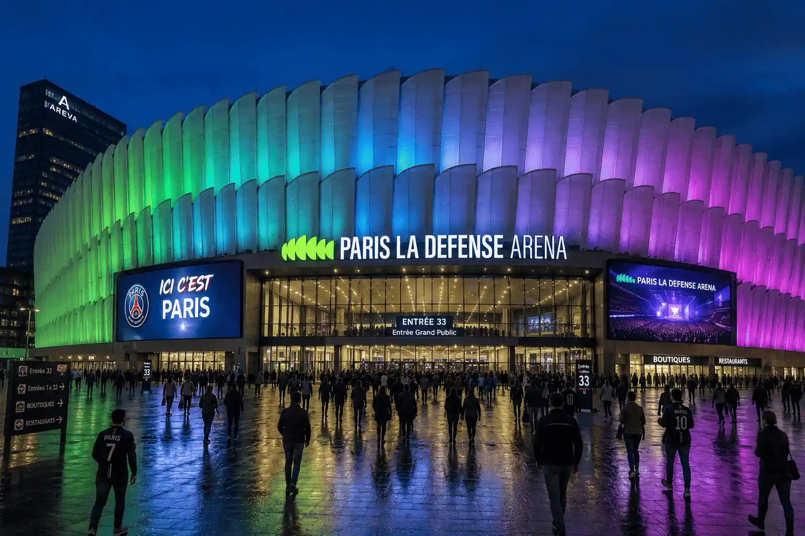
La plus grande salle couverte d'Europe accueille concerts géants, spectacles et événements sportifs tout au long de l'année.
Voir la programmation →Les restaurants situés au plus près des sites touristiques sont souvent plus chers et pas toujours les plus authentiques. Quelques rues plus loin, les adresses sont généralement plus intéressantes.
Paris semble compacte sur une carte, mais certaines visites peuvent nécessiter beaucoup de marche. Le métro reste souvent le moyen le plus efficace pour traverser la ville.
La Tour Eiffel, le Louvre ou certaines croisières affichent régulièrement complet. Réserver à l'avance permet d'éviter les longues files d'attente.
Un hébergement moins cher peut sembler attractif, mais les temps de transport quotidiens peuvent rapidement réduire le temps disponible pour profiter de Paris.
Le Louvre, Montmartre, la Tour Eiffel et le Marais méritent chacun du temps. Mieux vaut profiter de quelques quartiers que courir d'un monument à l'autre.
Trois à cinq jours permettent de découvrir les principaux monuments, quartiers et musées de Paris. Une semaine offre davantage de temps pour profiter des cafés, des jardins et des expériences locales.
Le Marais est souvent le meilleur compromis pour une première découverte. Central, animé et plein de charme, il permet d'accéder facilement aux principaux sites de la capitale.
Le printemps et l'automne sont généralement les périodes les plus agréables grâce aux températures douces et à une fréquentation plus modérée qu'en plein été.
Paris peut s'adapter à différents budgets. Les musées, monuments et hébergements représentent souvent les principales dépenses, mais de nombreuses promenades et visites restent gratuites.
Oui. La Tour Eiffel, le Louvre, certaines croisières sur la Seine et les grands événements sportifs affichent régulièrement complet plusieurs jours à l'avance.
Le métro parisien reste le moyen le plus rapide pour explorer la capitale. Le réseau est dense, efficace et permet de rejoindre facilement les principaux quartiers touristiques.
La Tour Eiffel, l'Arc de Triomphe, Montmartre et la terrasse des Galeries Lafayette offrent parmi les plus beaux panoramas de la capitale.
La Galerie Vivienne, la Coulée Verte, l'Île Saint-Louis ou certaines promenades le long des quais permettent de découvrir un Paris plus authentique et souvent moins fréquenté.
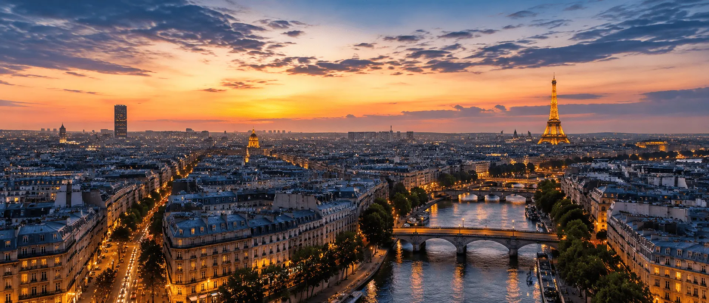